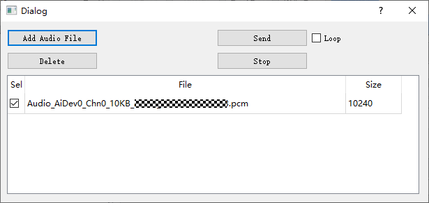

前言
前言
AQ音频质量调试工具使用指南主要辅助调试人员进行音频效果及差异化的调节，本文重点阐述相关的调试操作方法。
说明：
本文以Hi3519DV500描述为例，未有特殊说明，Hi3516DV500、Hi3516CV610与Hi3519DV500内容一致。
与本文档相对应的产品版本如下。
本文档（本指南）主要适用于以下工程师：
- 技术支持工程师
- 软件开发工程师
在本文中可能出现下列标志，它们所代表的含义如下。


概 述
工具概述
AQ（以下简称AQTools）为客户提供一系列专业声音质量调试工具，包括方便的在线调试工具（Tuning Tool），连接单板后可以直接进行各模块的参数调节，同时提供了音频抓拍工具，方便客户抓拍设备上的音频样本。
工具从使用场景上来分主要分为：
- 在线调试工具（Tuning Tool）：用于各类参数的精细及差异化的调节，实时生效，可以通过预览看到音频质量的效果。
- 抓拍工具（Capture Tool）：抓拍工具，支持抓拍PCM音频文件。
工具从交付客户角度分为两大部分：PC端和板端。AQTools包括在线调试工具和抓拍工具；板端为ittb_aqtool进程，主要负责在线参数调节和抓拍数据的传递。
环境准备说明
软硬件需求
-
硬件需求
- 安装有Hi3519DV500解决方案，并具有网络端口的单板硬件。
- 台式计算机或便携式计算机。
- 网络连接线（若使用局域网络，则还需要路由器等网络交换设备）。
- 用于运行AQTools工具的计算机显示器分辨率宽度不小于1024像素，高度不小于768像素。
-
软件需求
用于运行AQTools工具的计算机须安装Windows 10或以上版本的Windows操作系统。
物理链路连接
AQTools工具分为客户端（即PC端软件）和服务端（即板端软件），使用网络或者串口通讯进行交互，可选用以下三种连接方式中的任意一种方式完成物理链接。
-
计算机与单板直接连接
将网络连接线的两端分别接入单板和计算机的网络端口。
-
使用局域网络连接
- 将网络连接线的两端分别接入单板网络端口与路由器客户端口。
- 若计算机使用有线网络，则将另一根网络连接线的两端分别接入计算机的网络端口和路由器客户端口；若使用无线网络，则请参照当前路由器的设置（或网络管理员分配给您的网络设置）将计算机接入无线热点。
-
计算机与单板串口连接
将串口连接线的两端分别接入单板串口和计算机的串口。
串口连接由于只有单一连接，部分功能会受限，例如AQ Capture由于需要保持"心跳"连接，取消功能无法使用。
Linux系统下板端软件的安装与运行
烧录芯片SDK并配置板端工具运行环境步骤如下，具体请参考《Hi3519DV500/Hi3516DV500 SDK 安装以及升级使用说明》烧写镜像文件到单板，并配置好网络。将mpp/ko目录放置到文件系统中，或者nfs mount服务器的mpp目录到单板文件系统上。
- 把位于SDK发布包中的Hi3519DV500_AQ_VX.X.X.X.tgz解压后拷贝到单板上或者服务器上。如果拷贝到服务器上运行，需先将单板mount到服务器目录下。
- 启动音频业务时运行./AQTool.sh脚本即可。
PC端软件的安装
AQTools工具PC端软件是绿色软件，直接使用解压缩工具（如WinRAR、WinZip等）将AQTools工具压缩包（zip格式）解压缩到任意的可写目录，即可使用。
快速入门
欢迎界面
用户每次运行AQTools.exe启动工具时，工具会弹出欢迎界面，引导用户快速新建调试表格与连接单板，如图1例所示。

若希望通过此界面快速展开音频质量调试，请执行以下操作：
- 选定正确的调试表格模板。在“Load Templates”的下拉框中，选择与被调试芯片名称一致，且版本号匹配的模板。
-
连接单板：如果用网络连接单板，“Connection Type”下拉框选择“Network”，并在“IP Address”一栏中输入单板使用的IP地址；在“Port”一栏中输入运行板端程序时指定的端口号码（默认为4322）。
如果用串口连接单板，需要进行执行以下操作：
- 烧写镜像到板端后，打开工具的config.cfg文件，把UartEn=0改为=1，UartDev=/dev/uartdev-0改为UartDev=/dev/ttyS000。
-
在串口工具打开对应串口，输入vi /etc/init.d/S01udev，配置IP（格式：ifconfig eth0 hw ether 00:f4:da:35:57:34;ifconfig eth0 10.128.192.124 netmask 255.255.252.0;route add default gw 10.128.192.1;
telnetd &），保存后退出。
-
单板重新上电，并通过telnet打开上述设置的ip。
- 在串口工具输入 vi /etc/inittab，把有ttyS000 115200的信息注释掉，保存退出并关闭串口。
- 单板重新上电，并重新通过telnet打开ip，起业务。
- 工具界面的“Connection Type”下拉框选择“Serial Port”，并选择相应的COM口来连接板端。
以上操作执行完毕后，点击“OK”按钮，工具将读取选定的模板生成调试表，并自动建立计算机与单板间的网络连接。且若网络连接成功建立，工具还将自动从板端读取所有调试项的值。
- 默认情况下，工具会记住用户每次输入的所有信息。若用户只是将参数用于一次临时的调试，并不希望工具记住，请将“Remember the selections”前的复选框勾选取消。
- 如果用户不希望每次打开工具时弹出欢迎窗口，请勾选“Do not show this dialog when start AQTools”。若勾选此项，则下一次用户启动工具时，欢迎窗口将不再出现，而是直接显示工具主界面。
工具主界面
工具主界面如图1例所示。

AQTools工具的主界面按功能的不同分为以下几个区域：
(1) 工具栏：提供一些常用的操作的快捷按钮
(2) 调试表面板：显示当前打开的调试表文件所包含的所有可调试项
(3) 调试区域：点击左侧的树节点，此区域会显示选中节点对应的调试页面
(4) 高级功能区域：显示通讯日志，并提供脚本输入与执行功能。
(5) 提示栏：显示一些操作的提示性文本。
常用操作
新建调试表
通过工具栏的“新建”（ ）按钮可以创建一个调试表格，并将其用于音频质量调试。点击“新建”按钮，工具会弹出“Create a new AQ table”对话框，如图1所示。
）按钮可以创建一个调试表格，并将其用于音频质量调试。点击“新建”按钮，工具会弹出“Create a new AQ table”对话框，如图1所示。

在下拉框中选择对应的调试表格模板，点击“OK”按钮，工具将建立调试表格。建立后，在主界面的调试版面板区，会显示当前调试表格的树形结构（详细描述请参见"界面及功能说明"）。
保存调试数据文件
如果需要将当前的调试表以及板端读取到的调试数据保存到文件中，请点击工具栏上的“保存”按钮（）。此时工具将弹出路径选择的对话框。用户选定路径后，工具即将当前调试表的数据进行保存。
保存的文件格式为*.xml。调试数据文件亦会包含所使用调试表的结构。
打开调试数据文件
如果需要加载保存的调试数据文件，请点击工具栏上的“打开”按钮（），此时工具将弹出对话框，让用户选择要打开的数据文件。
工具打开调试数据文件时，会读取文件中保存的调试表结构并将其显示在调试表面板。
须知：
- 导入xml文件后，切换可调项界面不会自动获取板端数据，可调项界面显示导入文件的数据。
- 导入xml文件后，点击主界面或可将参数设置到板端，或者切换到可调项界面点击调试页上的将此组数据设置到板端。
- AQTools当前版本导出的数据文件格式为.xml，兼容较早版本导出的.sav格式的数据文件。如需导入较早版本导出的.sav文件，在打开文件对话框中将默认的AQ Table Data File(*.xml)改为AQ Table Data File(*.sav)，如果较早版本与当前版本数据项长度不匹配则跳过不匹配的数据项。
撤销与重做
如果某一次调试操作需要被撤销，单击工具栏上的“撤销”按钮（ ）即可完成。要重做被撤销的操作，请单击工具栏上的“重做”按钮（）。
）即可完成。要重做被撤销的操作，请单击工具栏上的“重做”按钮（）。
打开外挂插件/外挂程序
工具栏最右侧的下拉框（ ）列出了所有当前可用的外挂插件与程序。点击下拉框，选择需要使用的插件/程序即可。
）列出了所有当前可用的外挂插件与程序。点击下拉框，选择需要使用的插件/程序即可。
- 工具退出时，被打开的插件会同时被关闭。
- 由于一些外挂程序依赖连接参数，因此打开外挂的应用程序时，若工具没有与单板建立网络连接，则打开操作将被阻止。
连接单板
点击工具栏上的“连接”（ ）按钮，工具将弹出单板连接向导对话框如图1所示。
）按钮，工具将弹出单板连接向导对话框如图1所示。

用户在“IP Address”的下拉框中输入单板的IP地址（也可以点击下拉按钮选择之前连接过的单板的IP地址）并在“Port”文本框中输入端口号后，点击“Connect”，工具就会尝试连接单板。
若单板连接成功，则工具栏的“连接”按钮（）将被禁用，“断开”按钮（ ）会被激活。
）会被激活。
断开与单板的连接
在已经连接单板的状态下，点击工具栏的“断开”按钮（ ），即可中断与计算机单板的网络连接。
），即可中断与计算机单板的网络连接。
工具调试表设置
点击工具栏的“设置”按钮（ ），打开工具调试表设置对话框。
），打开工具调试表设置对话框。

界面及功能说明
在线调试模块使用说明
调试结构界面
新建调试表或打开调试数据文件以后，左侧的调试表面板将显示出当前调试表的结构，如图1所示。

按照被调试功能大类的不同，调试表中设立了很多的调试页面（在此树结构上以芯片名的下级节点表示）。点击这些调试页的节点，工具会在右侧的调试区域显示调试页中包含的内容，如图2所示。

使用搜索框可以通过关键字快速定位调试项。在搜索框中输入关键字（关键字不区分大小写）以后，按下回车键（或点击放大镜按钮），工具将自动定位到下一个包含该关键字的字段，并打开其所属的调试页面，如图3所示。

读写通路设置
通过Handle页面的Mode Handle项来配置，如图1所示。

寄存器/算法参数调整
在调试表树结构中以图标表示的调试页为“寄存器/算法参数”调试页。这些页对应的调试界面如图1所示。
图 1 寄存器/算法参数调试页（以AI音量质量增强（AI VQE）参数为例）

- Indi-Read：当用户点击“Read Page”或“Read All”时，本组寄存器/算法参数不进行读取操作，但仍可以通过该组的“Read”按钮进行读取；
- Indi-Write：当用户点击“Write Page”或“Write All”时，本组寄存器/算法参数不进行写入操作，但仍可以通过该组的“Write”按钮进行写入。
寄存器/算法参数调整前都需要先根据模块设置对应的open_mask写入板端，才能读写该模块参数。open_mask参数如何设置参考《MPP 媒体处理软件 V6.0 开发参考》音频中“音频输入输出”小节。
寄存器/算法参数的查看与修改
每个组内都包含有寄存器与算法参数，其中标有“”的参数行代表可写参数，标有“”的参数行代表只读参数。参数按照其内部形式与取值范围的不同，被分为以下四类，并以不同的控件呈现，如表1所示。
表 1 寄存器/算法参数的调试项类型
|
||
|
点击该按钮，会弹出一个对话框，矩阵的值会显示在对话框内的表格控件中： 用户修改表格中的值，点击空白处或者关闭对话框，即可完成矩阵值的修改。 矩阵若是只读的，用户将无法修改表格内的值，且此时打开矩阵的按钮显示文本为“View this Matrix”。 |
从板端读取数据
在已经连接到板端工具的情况下，点击每个分组内的“Read”按钮（ ），工具就会读取组内每一项参数在单板上的数值，并显示在工具上。
），工具就会读取组内每一项参数在单板上的数值，并显示在工具上。
将数据写入到板端
在已经连接到板端工具的情况下，点击每个分组内的“Write”按钮（），工具会将组内每一个可写参数项的当前显示值写到板端。
数据的暂存与恢复
工具对每个调试项分组提供两组数据暂存空间，用户可以利用暂存空间临时保存调整的值进行复原或比较操作。
- 点击或，可以将分组内当前调整好的值暂存起来。
- 点击或，可以将暂存的值恢复到分组界面上。
数据的显示方式转换
选择列表的项，Group页面上的数据将以十进制形式显示。选择，将以十六进制形式显示。
调试数据的批量读写与自动写入
每新建一个调试表或打开一个数据文件，读写控制面板就会显示在界面上，如图1所示。

读写控制面板包含以下功能入口（所有的读写操作均需要在已连接单板状态下进行）：
- 全部读取按钮（）：点击此按钮时，工具会读取调试表内所有调试项在板端的当前数值。新建调试表（未打开自动读取）或导入BIN文件后，建议执行一次全部读取操作。
- 全部写入按钮（）：点击此按钮时，工具会将调试表内所有调试项在工具中的暂存值写入到板端。
- 自动写入开关（关闭状态， 打开状态）：开关打开时，每修改一个可写的调试项，工具就会将该调试项的新值写入板端。建议打开此功能，以保证调试值能立即生效。
- 页读取按钮（）：点击此按钮时，工具会读取当前打开的调试页内所有调试项在板端的当前数值。
- 页写入按钮（）：点击此按钮时，工具会将当前打开的调试页内所有调试项在工具中的暂存值写入到板端。
参数详细
下面将详细列出界面上各模块参数对应SDK的API函数参考。
Hi3519DV500/Hi3516CV610参数
表 1 AI设置对应API
表 2 AI_VQE设置对应API
表 3 AO设置对应API
表 4 AO_VQE设置对应API
音频码流抓拍工具使用说明
抓取音频流数据
从AQTools工具主界面工具栏的外挂插件 下拉框中选择“AQ Capture Tool”，可以打开抓拍工具。
下拉框中选择“AQ Capture Tool”，可以打开抓拍工具。

抓取音频数据步骤如下：
- 在Stream Position下拉框中选择抓拍位置（AI/AO/AENC）
- File Size中输入要抓拍文件的大小（最小1KB，最大10240KB）；
- File Suffix Name中添加后缀文件名，长度[0, 16]；
- 点击“Capture”按钮；
- 若抓取成功，工具将弹出文件夹选择对话框，此时请选择保存位置。
Hi3519DV500只能从AI抓取，且需运行在AI-AO、AI-AENC非系统绑定模式下。
导入音频数据
从AQTools工具主界面工具栏的外挂插件下拉框中选择“AQ Audio Utilities”，可以打开导入音频数据界面。

导入音频数据步骤如下：
- Add Audio File ，选择音频文件到工具列表；
- Sel，选择需要灌入板端的音频文件；
- Loop，选择是否循环灌入模式；
- 点击“Send”按钮，工具将弹框提示是否灌入成功；
- 点击“Stop”按钮，停止文件灌入。
若删除音频列表中文件，需先点击音频文件名使高亮，再点击“Delete”，删除文件。
Hi3519DV500只支持在ADEC业务下灌音频数据。
ini文件适配
表 1 ini文件参数一览表
[bind]和[bind_attr]用于配置各模块间的绑定关系。SysBind为是否使用系统绑定的标志。如果[bind]中的BindNum配置为5，则应当在[bind_attr]配置bind0、bind1、bind2、bind3和bind4。每一项bindx有6个属性，分别对应SrcMod、SrcDev、SrcChn、DstMod、DstDev、DstChn。例如21|0|0|22|0|0表示将AI Dev0的Chn0作为前端与AO Dev0的Chn0作为后端绑定起来。
FAQ
如何check版本？
【现象】
正确启动单板对应的音频调节工具，并且音频调节工具能够正确打开。但打开xml文件之后连接单板，工具提示版本不匹配。
【分析】
音频调节工具板端版本号比xml版本号要新。
【解决】
查看当前使用的SDK版本号，确认SDK版本号、音频质量调节工具版本号、xml版本号保持一致。